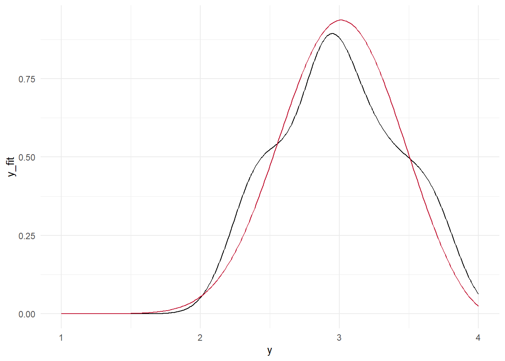
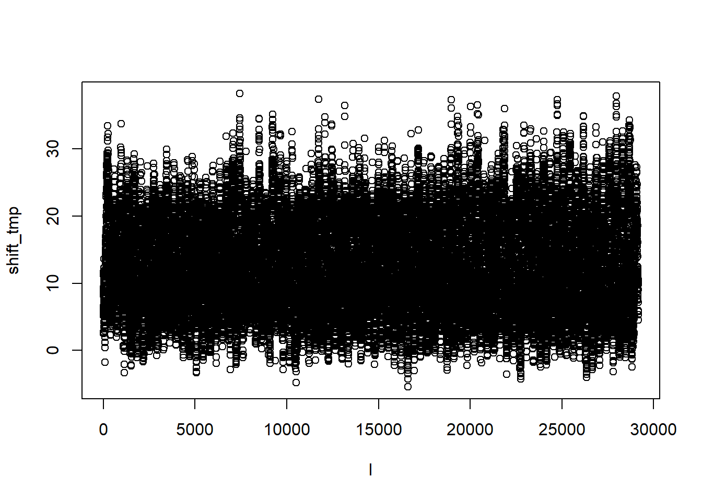
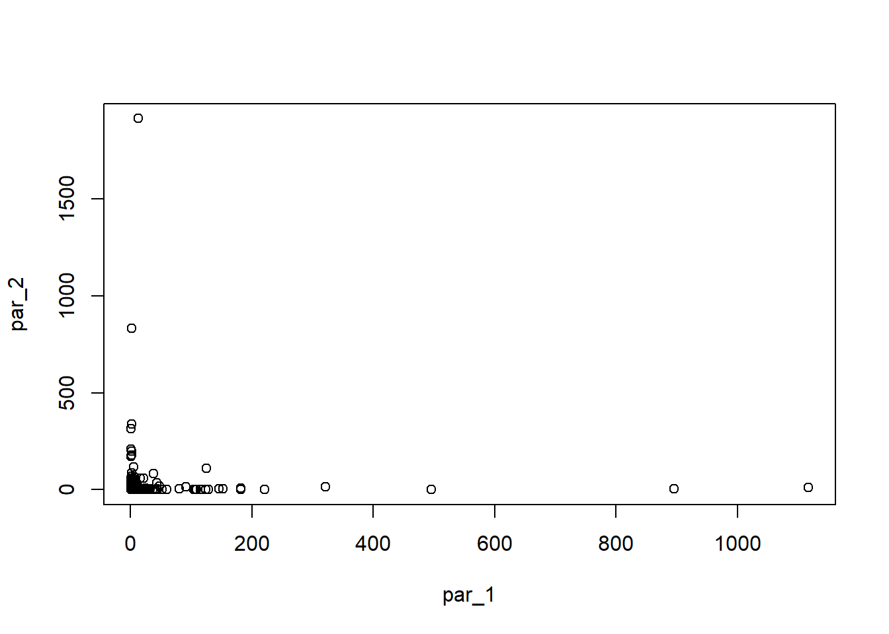
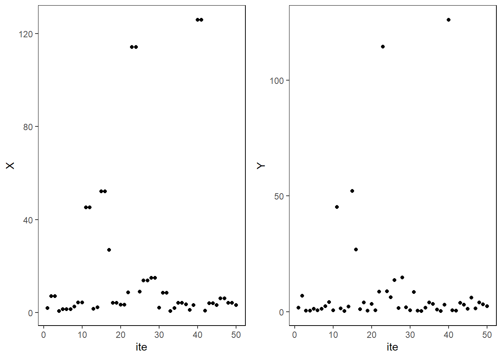
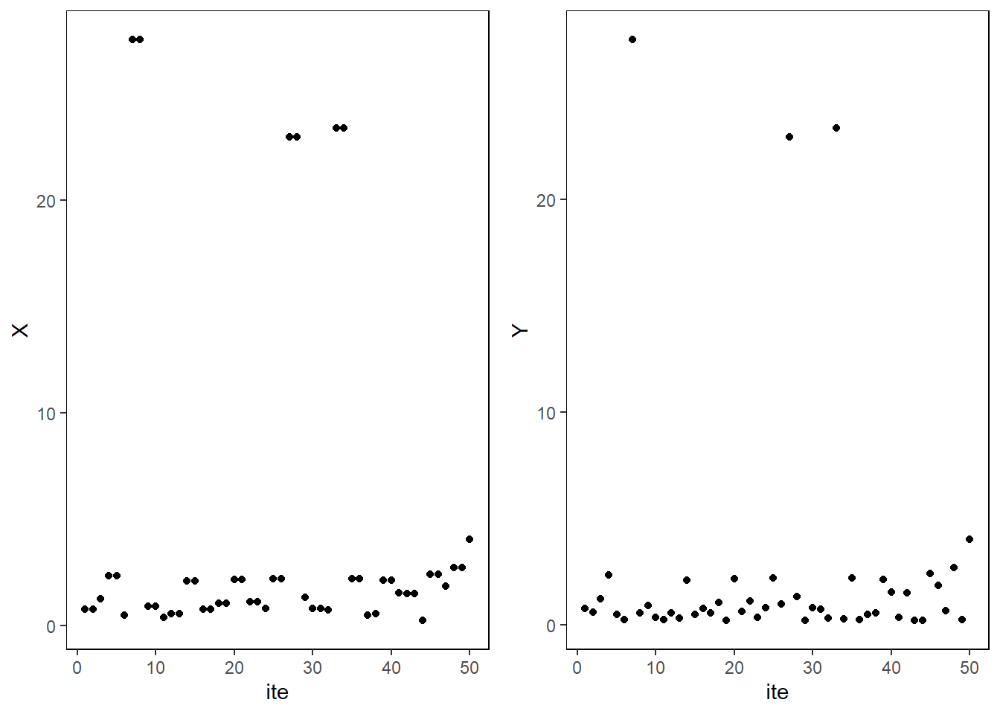
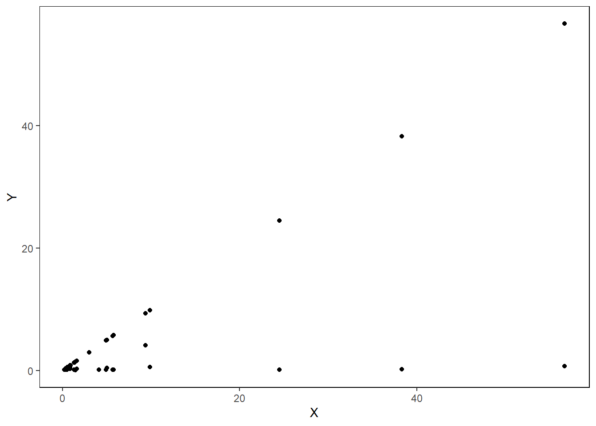
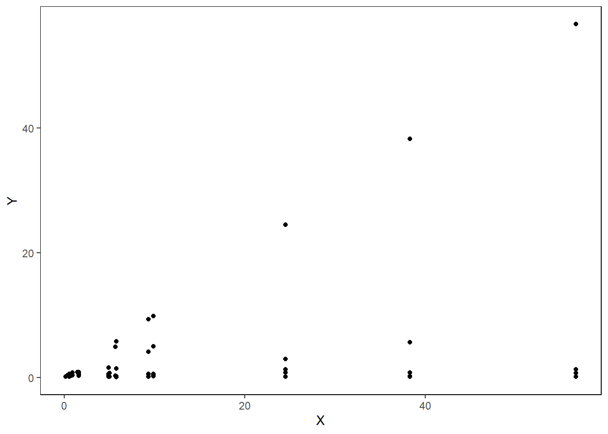

Explore extremes
Block maxima
Suppose we generate from normal distribution. And we have block maxima from every \(100\) observations.
df <- data.frame(x=1:10000, y=rnorm(10000,0,1))
df$block_max <- rep(FALSE,10000)
for (i in 1:100) {
df$block_max[df$y==(max(df$y[(100*(i-1)+1):(100*i)]))] <- TRUE
}
ggplot(df) + geom_point(aes(x=x,y=y,colour=factor(block_max)))
Suppose we plot only the block maxima.
ggplot(df %>% filter(block_max==TRUE)) + geom_point(aes(x=x,y=y))
Model with GEV.
ggplot(df %>% filter(block_max==TRUE),aes(y)) + geom_density()
ggplot(df,aes(y) ) + geom_density()
Return level plots
Exercise recreating Fig. 3.1 from Coles’ book. Possible typo in the book as the \(x\)-axis should be \(- \log(-\log(U))\) and not \(\log(-\log(U))\).
# set parameters
mu <- rep(0,3)
sigma <- rep(1,3)
xi <- c(-0.2,0,0.2)
U <- runif(10000) %>% sort()
z_p_neg <- c()
z_p_pos <- c()
z_p_0 <- c()
# calculate z_p for different values of xi
for (i in 1:length(U)) {
z_p_neg[i] <- -(1- (-log(U[i]))^(-xi[1]) )*(sigma[1]/xi[1])+ mu[1]
z_p_pos[i] <- -(1- (-log(U[i]))^(-xi[3]) )*(sigma[3]/xi[3])+ mu[3]
z_p_0[i] <- -log(-log(U[i]))*sigma[2]+mu[2]
}
z_p <- data.frame(U,z_p_neg,z_p_0,z_p_pos)
z_p %>% ggplot() + geom_line(aes(x=-log(-log(U)),y=(z_p_neg)),color="#009ada",size=1.5) + geom_line(aes(x=-log(-log(U)),y=(z_p_0)),size=1.5) + geom_line(aes(x=-log(-log(U)),y=(z_p_pos)),color="#c11432",size=1.5) +
xlab(TeX("$-\\log(-\\log(U))$")) +
ylab(TeX("$z_p$" )) + theme_minimal() +
annotate("text", x = 8, y = 0, label = TeX("$\\xi=-.2$")) +
annotate("text", x = 8, y = 10, label = TeX("$\\xi=0$")) +
annotate("text", x = 8, y = 25, label = TeX("$\\xi=.2$"))Warning: Using `size` aesthetic for lines was deprecated in ggplot2 3.4.0.
ℹ Please use `linewidth` instead.Warning in is.na(x): is.na() applied to non-(list or vector) of type
'expression'
Warning in is.na(x): is.na() applied to non-(list or vector) of type
'expression'
Warning in is.na(x): is.na() applied to non-(list or vector) of type
'expression'
Maximum likelihood fitting of the GEV distribution
data(venice)Try some functions from the ismev package.
gev.fit(venice[,2])$conv
[1] 0
$nllh
[1] 222.7145
$mle
[1] 111.09925486 17.17548761 -0.07673265
$se
[1] 2.6280070 1.8033672 0.0735214Try random exponential as it is known to have \(\xi=0\).
df <- data.frame(x=1:10000, y=rnorm(10000,0,1))
df$block_max <- rep(FALSE,10000)
for (i in 1:100) {
df$block_max[df$y==(max(df$y[(100*(i-1)+1):(100*i)]))] <- TRUE
}
ggplot(df) + geom_point(aes(x=x,y=y,colour=factor(block_max)))
fit <- gev.fit(df$y[df$block_max==TRUE])$conv
[1] 0
$nllh
[1] 54.39127
$mle
[1] 2.4063985 0.3614291 -0.0294855
$se
[1] 0.04052278 0.02900888 0.07125537fit$mle[1] 2.4063985 0.3614291 -0.0294855#gamGPDfit(x=df,datvar='y',threshold = 2.5,xiFrhs = xiFrhs)Compare the fit with the density.
g <- function(x) {
1/fit$mle[2] * (1 + fit$mle[3]*((x - fit$mle[1])/fit$mle[2] ) )^(-(1+1/fit$mle[3]))* exp(-(1 + fit$mle[3]*((x - fit$mle[1])/fit$mle[2] ) )^(-1/fit$mle[3]) )
}
x_fit <- seq(1,4,0.01)
y_fit <- c()
for (i in 1:length(x_fit)) {
y_fit[i] <- g(x_fit[i])
}
#plot(x_fit,y_fit)
df_fit <- data.frame(x_fit,y_fit)ggplot() + geom_density(df %>% filter(block_max==TRUE),mapping=aes(y)) + geom_line(df_fit,mapping = aes(x_fit,y_fit),color='#c11432') + theme_minimal()
Try same fit with Venice data.
venice <- data.frame(x=1:length(venice[,2]),y=venice[,2])
fit <- gev.fit(df$y[df$block_max==TRUE])$conv
[1] 0
$nllh
[1] 54.39127
$mle
[1] 2.4063985 0.3614291 -0.0294855
$se
[1] 0.04052278 0.02900888 0.07125537fit$mle[1] 2.4063985 0.3614291 -0.0294855x_fit <- seq(70,200,1)
y_fit <- c()
g <- function(x) {
1/fit$mle[2] * (1 + fit$mle[3]*((x - fit$mle[1])/fit$mle[2] ) )^(-(1+1/fit$mle[3]))* exp(-(1 + fit$mle[3]*((x - fit$mle[1])/fit$mle[2] ) )^(-1/fit$mle[3]) )
}
for (i in 1:length(x_fit)) {
y_fit[i] <- g(x_fit[i])
}
df_fit <- data.frame(x_fit,y_fit)
ggplot() + geom_density(venice,mapping=aes(y)) + geom_line(df_fit,mapping = aes(x_fit,y_fit),color='#c11432') + theme_minimal()Warning: Removed 131 rows containing missing values (`geom_line()`).
N <- 1000
norm <- rnorm(N)
ex <- rexp(N)
plot(norm,ex)
hist(norm)
hist(ex)
u_1 <- pnorm(norm)
u_2 <- pexp(ex)
u_1 %>% head()[1] 0.6232682 0.1676835 0.5488885 0.6451381 0.1123330 0.1110303plot(u_1,u_2)
n_1 <- qnorm(u_1)
n_2 <- qnorm(u_2)
plot(n_1,n_2)
par_1 <- 1/(1-u_1)
par_2 <- 1/(1-u_2)
plot(par_1,par_2)
Plot Gumbel distribution using PIT
mu <- 1
sig <- 1
U <- runif(1000)
z <- mu - sig*log(-log(U))
df <- data.frame(z,U)
ggplot(df) + geom_point(aes(x=z,y=U))
Try Port Pirie sea-levels diagnostic plots
Port Pirie data not available in the package, maybe try with Venice sea-levels data?
data(portpirie)
venice[,2] [1] 103 78 121 116 115 147 119 114 89 102 99 91 97 106 105 136 126 132 104
[20] 117 151 116 107 112 97 95 119 124 118 145 122 114 118 107 110 194 138 144
[39] 138 123 122 120 114 96 125 124 120 132 166 134 138x=gev.fit(portpirie[,2])$conv
[1] 0
$nllh
[1] -4.339058
$mle
[1] 3.87474692 0.19804120 -0.05008773
$se
[1] 0.02793211 0.02024610 0.09825633gev.diag(x)
Try to recreate the likelihood function.
x <- portpirie[,2]The function gets longer as initial values of the parameters are either pre-specified or calculated from the data. Therefore, gev_fit.R script contains the function.
gev.diag(gev_fit(x))Warning in log(sig): NaNs producedWarning in log(1 + xi * ((x - mu)/sig)): NaNs produced
Warning in log(1 + xi * ((x - mu)/sig)): NaNs produced# the function could return very high values
# that cannot be minimum negative likelihood like 10^6
# would include in further developmentSuccess! The plotting function works with the likelihood function and produces desired output.
GEV plot outputs
Now, try to replicate the four plots given above, starting with the probability plot. The model probability is a straight line, but empirical data will deviate from this line.
# calculate GEV inverse CDF
GEV_inv <- function(U,mle) {
mu <- mle[1]
sig <- mle[2]
xi <- mle[3]
z <- (sig/xi) * ( (-log(U))^(-xi) -1) + mu
return(z)
}
# calculate GEV CDF
GEV <- function(z,mle) {
mu <- mle[1]
sig <- mle[2]
xi <- mle[3]
G <- c()
for (i in 1:length(z))
G[i] <- exp( -(1 + xi*((z[i]-mu)/sig) )^(-1/xi) )
return(G)
}
mle <- gev_fit(x)$mleWarning in log(sig): NaNs producedWarning in log(1 + xi * ((x - mu)/sig)): NaNs produced
Warning in log(1 + xi * ((x - mu)/sig)): NaNs producedModel <- portpirie %>% select(SeaLevel) %>% mutate(Model=GEV(z=SeaLevel,mle=mle))
Empirical <- portpirie %>% select(SeaLevel) %>% arrange(SeaLevel) %>% mutate(Empirical=row_number()/(nrow(portpirie)+1))
df <- portpirie %>% left_join(Empirical,by="SeaLevel") %>% left_join(Model,by="SeaLevel")
df %>% head() Year SeaLevel Empirical Model
1 1923 4.03 0.63636364 0.63798437
2 1924 3.83 0.25757576 0.28595517
3 1925 3.65 0.06060606 0.04902095
4 1926 3.88 0.36363636 0.37764286
5 1926 3.88 0.36363636 0.37764286
6 1926 3.88 0.36363636 0.37764286df %>% ggplot() + geom_segment(aes(x = 0, y = 0, xend = 1, yend = 1), color = "#C11432",size=1.5)+ geom_point(aes(x=Empirical,y=Model)) + ggtitle("Probability Plot") + xlab("Empirical distribution") + ylab("Model distribution")
Next is Q-Q plot.Q-Q plot compares two probability distributions by plotting their quantiles. In this example, it plots two GEV distributions with different parameters: empirical calculated though a formula used for the initial parameters in the optimisation and the model parameters (MLE).
GEV_QQ <- function(x) {
# empirical distribution estimates
sig_init <- sqrt(6 * var(x))/pi
mu_init <- mean(x) - 0.57722 * sig_init
xi_init <- 0.1
est_par <- c(mu_init,sig_init,xi_init)
# model (MLE) estimates
model_par <- gev_fit(x)$mle
# generate z using PIT for each case
q <- seq(from=1/(length(x)+1),to=length(x)/(length(x)+1),length.out=length(x)) #quantile
model <- GEV_inv(U=q,mle=model_par) #z generated from the model
est <- GEV_inv(U=q,mle=est_par) #z generated from GEV empirical estimates
dat <- x %>% sort()
return(data.frame(q=q,Model=model,Empirical=est,Data=dat))
}
# plot
df <- GEV_QQ(portpirie[,2])Warning in log(sig): NaNs producedWarning in log(1 + xi * ((x - mu)/sig)): NaNs produced
Warning in log(1 + xi * ((x - mu)/sig)): NaNs produceddf %>% head() q Model Empirical Data
1 0.01515152 3.580602 3.622073 3.57
2 0.03030303 3.618909 3.651729 3.62
3 0.04545455 3.644819 3.672249 3.63
4 0.06060606 3.665240 3.688694 3.65
5 0.07575758 3.682501 3.702783 3.66
6 0.09090909 3.697692 3.715329 3.66df %>% ggplot() +
geom_segment(aes(x = 3.5, y = 3.5, xend = 4.9, yend = 4.9), color = "#C11432",size=1.5,alpha=0.5)+
geom_point(aes(x=Empirical,y=Model)) + ggtitle("Q-Q Plot (from empirical estimates, not data)") + xlab("Empirical") + ylab("Model") 
The plot shows that empirical estimates are good since it is almost linear but shape parameter is a bit off, hence the slight curve.
df %>% ggplot() +
geom_segment(aes(x = 3.5, y = 3.5, xend = 4.75, yend = 4.75), color = "#C11432",size=1.5,alpha=0.5)+
geom_point(aes(y=Data,x=Model)) + ggtitle("Quantile Plot ") + ylab("Empirical") + xlab("Model")The next plot is return level plot.
### calculate 10 year return level ----
fit <- gev_fit(x)Warning in log(sig): NaNs producedWarning in log(1 + xi * ((x - mu)/sig)): NaNs produced
Warning in log(1 + xi * ((x - mu)/sig)): NaNs producedr <- 10
# # calculate z
# z <- GEV_inv(U=(1-1/r),mle=fit$mle)
# # calculate variance
# var_calc <- function(p,par) {
# mu <- fit$mle[1]
# sig <- fit$mle[2]
# xi <- fit$mle[3]
#
# z <- c(1)
# var <- z_T*Cov*z
# }
#
#
p <- seq(0.99,0.01,-0.01)
# var <- var_calc(p=p,par=fit$mle)
# # calculate the CI
# CI_l <- z-qnorm(0.975)*var
# CI_u <- z+qnorm(0.975)*var
z <- GEV_inv(U=p,mle=fit$mle)
df <- data.frame(p,z)
x <- portpirie[,2]
q <- seq(from=1/(length(x)+1),to=length(x)/(length(x)+1),length.out=length(x)) #quantile
dat <- x %>% sort()
df1 <- data.frame(dat,q)
df %>% head() p z
1 0.99 4.688429
2 0.98 4.576667
3 0.97 4.509100
4 0.96 4.460052
5 0.95 4.421304
6 0.94 4.389143ggplot() +
geom_line(aes(x=-1/log(df$p),y=df$z)) +
geom_point(aes(x=-1/log(df1$q),y=df1$dat)) + coord_trans(x="log") + xlab("Return level in years?")
plot(-1/log((1:length(dat))/(length(dat) + 1)), sort(dat),log='x')
U_1 <- runif(10000)
X_1 <- -1/(log(U_1))
U_2 <- runif(10000)
X_2 <- -1/(log(U_2))
plot(X_1/10000,X_2/10000)
N <- 10000
R <- X_1/N+X_2/N
W <- (X_1/N)/(R)
plot(R,W)
X_3 <- X_1[R>0.1]
W_1 <- W[R>0.01]
R_1 <- R[R>0.01]
plot(R_1,W_1)5.2 Maxima of stationary sequences
Simulate series \(X_i=\max (Y_{i-1}, Y_i)\) where \(Y\) has cdf \(F_Y(y)= \exp \left\{ -\frac{1}{(a+1)y} \right\}\) for different values of \(a\).
# set a
a <- 0
# generate from Y
U <- runif(50)
Y <- c()
for (i in 1:50) {
Y[i] <- -1/(log(U[i])*(a+1))
}
X <- Y[1]
for (i in 2:50) {
X[i] <- max(Y[i-1],Y[i])
}
df <- data.frame(X,Y,ite=1:50)
x <- ggplot(df) + geom_point(aes(x=ite, y=X))
y <- ggplot(df) + geom_point(aes(x=ite, y=Y))
grid.arrange(x,y,ncol=2)
# set a
a <- 1/3
# generate from Y
U <- runif(50)
Y <- c()
for (i in 1:50) {
Y[i] <- -1/(log(U[i])*(a+1))
}
X <- Y[1]
for (i in 2:50) {
X[i] <- max(Y[i-1],Y[i])
}
df <- data.frame(X,Y,ite=1:50)
x <- ggplot(df) + geom_point(aes(x=ite, y=X))
y <- ggplot(df) + geom_point(aes(x=ite, y=Y))
grid.arrange(x,y,ncol=2)
# set a
a <- 2/3
# generate from Y
U <- runif(50)
Y <- c()
for (i in 1:50) {
Y[i] <- -1/(log(U[i])*(a+1))
}
X <- Y[1]
for (i in 2:50) {
X[i] <- max(Y[i-1],Y[i])
}
df <- data.frame(X,Y,ite=1:50)
x <- ggplot(df) + geom_point(aes(x=ite, y=X))
y <- ggplot(df) + geom_point(aes(x=ite, y=Y))
grid.arrange(x,y,ncol=2)
# set a
a <- 1
# generate from Y
U <- runif(50)
Y <- c()
for (i in 1:50) {
Y[i] <- -1/(log(U[i])*(a+1))
}
X <- Y[1]
for (i in 2:50) {
X[i] <- max(Y[i-1],Y[i])
}
df <- data.frame(X,Y,ite=1:50)
x <- ggplot(df) + geom_point(aes(x=ite, y=X))
y <- ggplot(df) + geom_point(aes(x=ite, y=Y))
grid.arrange(x,y,ncol=2)
This makes sense. For example, \(z=1\) corresponds to 0.3678794 for \(a=0\) and 0.6065307 for \(a=1\). Because the quantile is lower for \(a=0\), the distribution has more values larger then \(1\) than the case when \(a=1\).